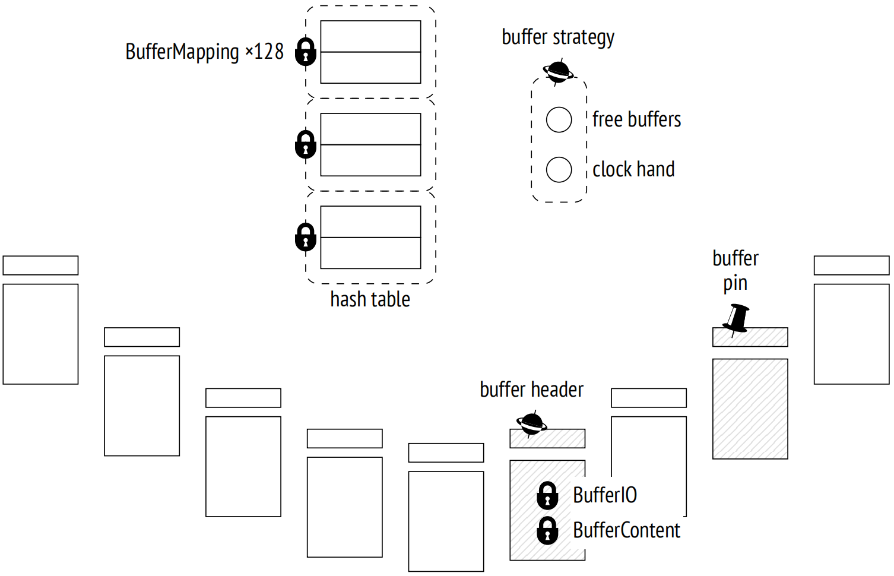
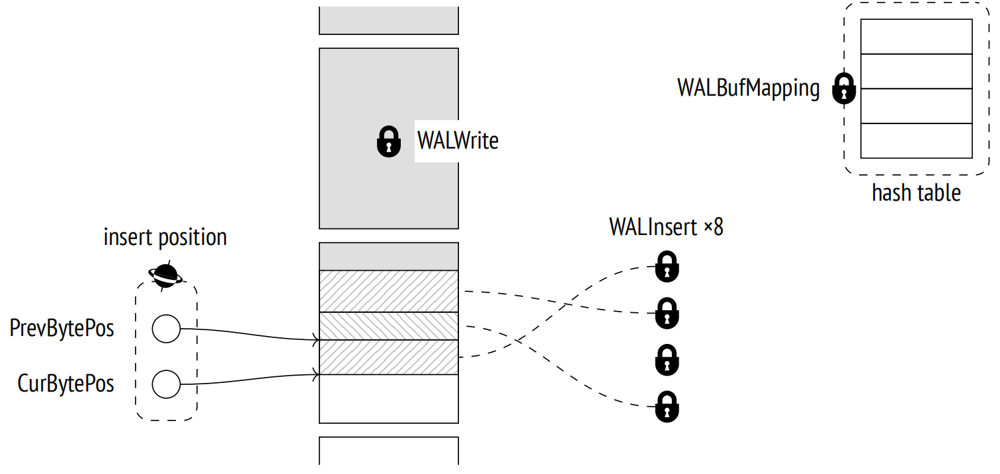

第 15 章：内存结构上的锁
15.1 自旋锁
为了保护共享内存中的数据结构，PostgreSQL 使用了几种更加轻量和开销更小的锁，而不是常规的重锁。
最简单的锁是自旋锁。自旋锁通常仅获取非常短的时间 (不超过几个 CPU 周期)，以保护特定内存单元不受并发更新的影响。
自旋锁基于原子 CPU 指令，比如 CAS (compare-and-swap) 1。它们仅支持独占锁定模式。如果所需资源已被锁定，那么进程将忙等，并重复命令 (在循环中"自旋"，因此得名)。如果在指定的时间间隔内无法获取锁，进程将暂停一段时间，然后开始另一次循环。
如果评估冲突的概率非常低，那么这种策略是有意义的，因此在一次失败的尝试之后，锁很有可能在几条指令内被获取。
自旋锁既没有死锁检测，也没有监测机制。从实际的角度来看，我们只需要知道它们的存在；正确实现的全部责任均落在 PostgreSQL 开发者身上。
15.2 轻量锁
接下来，还有所谓的轻量锁，即 lwlocks 2。轻量锁是在处理数据结构 (例如，哈希表或指针列表) 所需的时间内获取的，通常时间较短；然而，当用于保护 I/O 操作时，可能需要更长的时间。
轻量锁支持两种模式：独占模式 (用于数据修改) 和共享模式 (用于只读操作)。轻量锁没有严格的队列机制：如果有多个进程在等待一个锁，其中一个进程将或多或少以随机的方式获得对资源的访问。在高负载的系统中，特别是那些有多个并发进程的系统中，这种机制可能会导致一些令人不悦的影响。
轻量锁也没有提供死锁检测机制；我们必须相信 PostgreSQL 开发人员正确实现了这些锁。然而，这些锁确实有监测机制，因此与自旋锁不同，它们是可以被观察到的。
15.3 例子
为了了解如何使用以及在何处使用自旋锁和轻量锁，让我们看下两个共享内存结构：缓冲区缓存和 WAL 缓冲区。我只会提到其中一些锁；由于全貌过于复杂，可能只有 PostgreSQL 内核开发人员感兴趣。
15.3.1 缓冲区缓存
为了访问用于定位缓存中特定缓冲区的哈希表，进程必须以共享模式获取一个 BufferMapping 轻量锁以进行读取，或者如果预期有任何修改，则以独占模式获取。
哈希表的访问十分频繁，因此这个锁经常成为瓶颈。为了最大限度地提高粒度，它被构造为一个由 128 个独立的轻量锁组成的锁集，每个锁用于保护哈希表的一个分区。3
早在 2006 年，Postgres 8.2 版本就将哈希表锁转换为包含 16 个锁的锁集；十年后，当 9.5 版本发布时，锁集的大小增加到了 128 个，但对于现代多核系统来说，这可能仍然不够。
为了访问缓冲区头，进程获取缓冲区头自旋锁 4 (名字是任意的，因为自旋锁没有对用户可见的名字)。某些操作，比如增加使用计数，不需要显式锁定，可以使用原子 CPU 指令执行。
为了读取缓冲区中的页面，进程需要获取此缓冲区头中的 BufferContent 锁 5。这个锁通常仅在读取元组指针时持有，稍后，缓冲区锁定提供的保护就足够了。如果需要修改缓冲区的内容，那么必须以独占模式获取 BufferContent 锁。当从磁盘读取某个缓冲区 (或写入磁盘) 时，PostgreSQL 还会在缓冲区头中获取 BufferIO 锁；它实际上是一个用作锁的属性，而不是一个真正的锁 6。它向请求访问这个页面的其他进程发出信号，告诉它们必须等到 I/O 操作完成。
指向空闲缓冲区的指针和淘汰机制的时钟指针由一个共同的缓冲区策略自旋锁保护 7。
15.3.2 WAL 缓冲区
WAL 缓存也使用哈希表将页面映射到缓冲区。不同于缓冲区缓存的哈希表，它由单个 WALBufMapping 轻量锁保护，因为 WAL 缓存较小 (通常是缓冲区缓存大小的 1/32 )，并且缓冲区的访问更加有序 8。
将 WAL 页面写入磁盘受到 WALWrite 轻量锁的保护，以确保此操作一次只由一个进程执行。
为了创建一个 WAL 条目，进程首先在 WAL 页面内预留一些空间，然后用数据填充。空间预留严格有序；进程必须获取一个插入位置的自旋锁，以保护插入指针 9。但一旦空间被预留后，它就可以由若干并发进程共同填充。为此，每个进程都必须获取构成 WALInsert 锁集的 8 个轻量锁中的任何一个 10。
15.4 监控等待
毫无疑问，锁对于 PostgreSQL 的正确运行是必不可少的，但它们可能导致不希望的等待。追踪这些等待以了解它们的起源是非常有用的。
获取长锁概览的最简单方式是调整 log_lock_waits 参数为 on。它会详细记录所有导致事务等待时间超过 deadlock_timeout 的锁至日志中。这些数据在死锁检测完成时显示，因此而得名。
然而，pg_stat_activity 视图提供了更多有用和完整的信息。每当一个进程 (不管是系统进程还是后端进程) 由于在等待某个东西而无法继续其操作时，此等待就会反映在 wait_event_type 和 wait_event 字段中，分别显示等待的类型和名称。
所有等待可以归类如下 11。
各种锁的等待组成了一个相当大的群组：
Lock：重锁
LWLock：轻量锁
BufferPin：锁定的缓冲区
但进程也可能在等待其他事件：
IO：输入/输出，需要读取或写入某些数据时
Client：客户端发送的数据 (psql 大部分时间处于这个状态)
IPC：其他进程发送的数据
Extension：由扩展注册的特定事件
有时，一个进程没有执行任何有用的工作。这样的等待通常是"正常"的，意味着它们不表明有任何问题。这类分组包括以下等待：
Activity：后台进程在其主循环中
Timeout：计时器
每种等待类型的锁按等待名称进一步分类。例如，等待轻量锁有相应的锁名称或相应的锁集 12。
你应该记住，pg_stat_activity 视图只显示了那些在源代码中以适当方式处理的等待 13。除非等待的名称出现在这个视图中，否则进程不会处于任何已知类型的等待状态。这样的时间应被视为"未知时间"，这并不一定意味着进程没有任何等待 — 我们只是不知道此刻发生了什么。
=> SELECT backend_type, wait_event_type AS event_type, wait_event
FROM pg_stat_activity;
backend_type | event_type | wait_event
−−−−−−−−−−−−−−−−−−−−−−−−−−−−−−+−−−−−−−−−−−−+−−−−−−−−−−−−−−−−−−−−−
logical replication launcher | Activity | LogicalLauncherMain
autovacuum launcher | Activity | AutoVacuumMain
client backend | |
background writer | Activity | BgWriterMain
checkpointer | Activity | CheckpointerMain
walwriter | Activity | WalWriterMain
(6 rows)当对视图进行采样时，所有的后台进程都处于空闲状态，而客户端后端进程正忙于执行查询，并且没有等待任何东西。
15.5 采样
不幸的是，pg_stat_activity 视图只显示了关于等待的当前信息；统计数据不会累积。收集随时间变化的等待数据的唯一方式是定期采样该视图。
我们必须考虑到抽样的随机性。与采样间隔相比，等待时间越短，检测到这种等待情况的机会就越低。因此，更长的采样间隔需要更多的样本来反映事物的实际状态 (但随着采样率的增加，开销也会增加)。出于同样的原因，采样对于分析短暂会话几乎没有用处。
PostgreSQL 没有提供内置的采样工具；但是，我们仍然可以尝试使用 pg_wait_sampling 14 扩展。为此，我们需要在 shared_preload_libraries 参数中指定它的库名，然后重启服务器：
=> ALTER SYSTEM SET shared_preload_libraries = 'pg_wait_sampling';
postgres$ pg_ctl restart -l /home/postgres/logfile现在让我们在数据库中安装扩展：
=> CREATE EXTENSION pg_wait_sampling;此扩展可以显示保存在其环形缓冲区中的历史等待情况。然而，更有趣的是获取等待概况 — 整个会话期间的累计统计数据。
例如，让我们看一下基准测试期间的等待情况。我们需要启动 pgbench 工具，并在其运行时确定其进程 ID：
postgres$ /usr/local/pgsql/bin/pgbench -T 60 internals
=> SELECT pid FROM pg_stat_activity
WHERE application_name = 'pgbench';
pid
−−−−−−−
36367
(1 row)测试完成之后，等待概况如下所示：
=> SELECT pid, event_type, event, count
FROM pg_wait_sampling_profile WHERE pid = 36380
ORDER BY count DESC LIMIT 4;
pid | event_type | event | count
−−−−−−−+−−−−−−−−−−−−+−−−−−−−−−−−−−−+−−−−−−−
36367 | IO | WALSync | 3478
36367 | IO | WALWrite | 52
36367 | Client | ClientRead | 30
36367 | IO | DataFileRead | 2
(4 rows)默认情况下 (由 pg_wait_sampling.profile_period 参数设置) 每秒采样 100 次。因此，要估算等待时间的秒数，必须将值除以 100。
在这个特定案例中，大部分等待与将 WAL 条目刷新到磁盘有关。这很好地说明了未知的等待时间：WALSync 事件直到 PostgreSQL 12 才被记录；对于更低的版本，等待概况不会包含第一行，尽管等待本身仍然存在。
如果我们人为降低文件系统的速度，使每个 I/O 操作需要耗时 0.1 秒 (为此，我使用了 slowfs 15)，那么等待概况将如下所示：
postgres$ /usr/local/pgsql/bin/pgbench -T 60 internals
=> SELECT pid FROM pg_stat_activity
WHERE application_name = 'pgbench';
pid
−−−−−−−
36747
(1 row)
=> SELECT pid, event_type, event, count
FROM pg_wait_sampling_profile WHERE pid = 36759
ORDER BY count DESC LIMIT 4;
pid | event_type | event | count
−−−−−−−+−−−−−−−−−−−−+−−−−−−−−−−−−−−−−+−−−−−−−
36747 | IO | WALWrite | 3603
36747 | LWLock | WALWrite | 2095
36747 | IO | WALSync | 22
36747 | IO | DataFileExtend | 19
(4 rows)现在，I/O 操作是最慢的，主要是以同步模式将 WAL 文件写入磁盘的相关操作。WAL 写入受到 WALWrite 轻量锁的保护，因此相应的行也会出现在等待概况中。
显然，在前一个示例中也获得了相同的锁，但由于等待时间短于采样间隔，所以要么它很少被采样到，要么根本就没有出现在等待概况中。这再次说明，要分析短暂的等待，你必须对其进行相当长时间的采样。
-
backend/storage/lmgr/s_lock.c ↩︎
-
backend/storage/lmgr/lwlock.c ↩︎
-
backend/storage/buffer/bufmgr.c
include/storage/buf_internals.h, BufMappingPartitionLock function ↩︎ -
backend/storage/buffer/bufmgr.c, LockBufHdr function ↩︎
-
include/storage/buf_internals.h ↩︎
-
backend/storage/buffer/bufmgr.c, StartBufferIO function ↩︎
-
backend/storage/buffer/freelist.c ↩︎
-
backend/access/transam/xlog.c, AdvanceXLInsertBuffer function ↩︎
-
backend/access/transam/xlog.c, ReserveXLogInsertLocation function ↩︎
-
backend/access/transam/xlog.c, WALInsertLockAcquire function ↩︎
-
postgresql.org/docs/14/monitoring-stats#WAIT-EVENT-TABLE.html ↩︎
-
postgresql.org/docs/14/monitoring-stats#WAIT-EVENT-LWLOCK-TABLE.html ↩︎
-
include/utils/wait_event.h ↩︎
-
github.com/postgrespro/pg_wait_sampling ↩︎
-
github.com/nirs/slowfs ↩︎